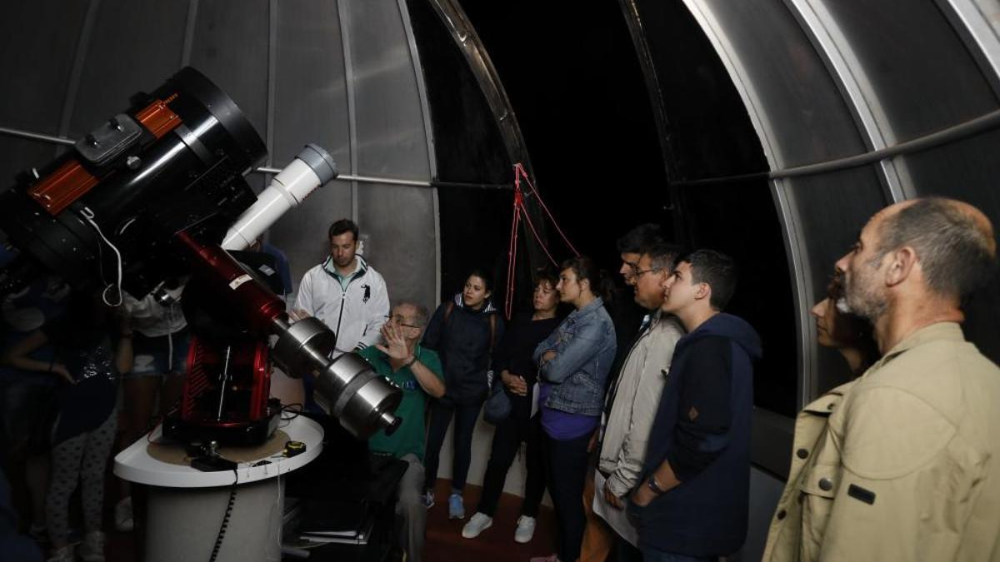

AstroClub Somiedo
Asociación de atronomía · Reserva Starlight de Somiedo, Asturias

Primeras observaciones del club, año 2012
El club nació el 14 de marzo de 2012 por iniciativa de un grupo de vecinos del Valle del Lago que ya subían al mirador con sus propios prismáticos.
"De mirar las estrellas con prismáticos a tener un club con más de 300 socios."
— Marta Vega, coordinadora general
Esta es la plantilla actual del club, con formación oficial en sus respectivas especialidades.
MV
Equipo destacado
Marta Vega
Coordinadora general · desde 2012
Lidera el equipo técnico y de voluntariado, y supervisa cada observación nocturna del club.
AF
Álvaro Fanjul
Astrofotógrafo · 2015
NB
Nuria Braña
Monitora · 2017
PB
Pablo Riestra
Técnico · 2018
CM
Carla Menéndez
Divulgación · 2020
IC
Iván Cangas
Senderos · 2021
JG
Juan González
Técnico · 2020
Grupo de monitores de observación — 10 personas
Grupo de astrofotografía — 6 personas
Grupo de divulgación en centros escolares — 4 personas
Todo el equipo cuenta con formación continua en obervación astronómica y primeros auxilios en montaña.